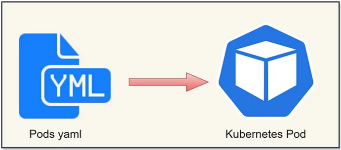
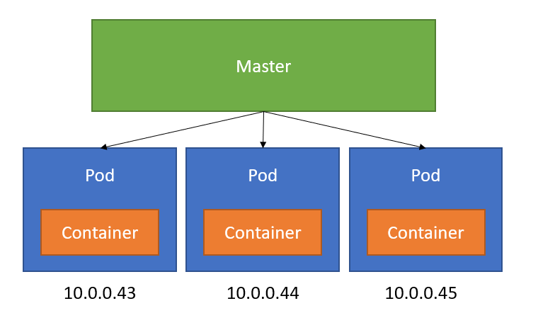
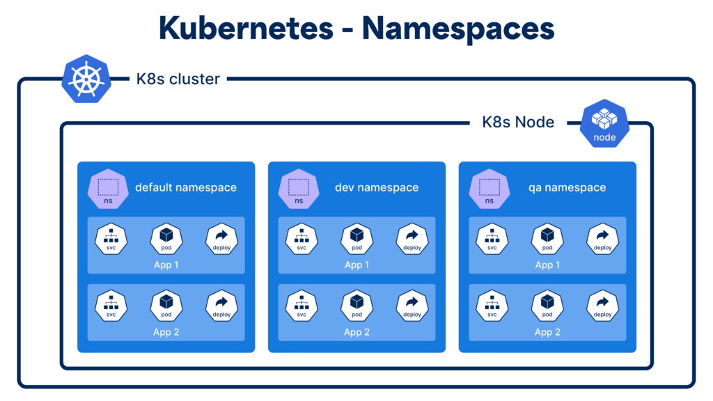
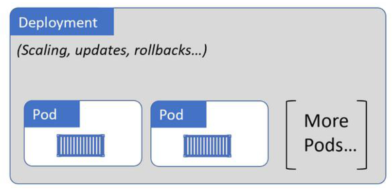
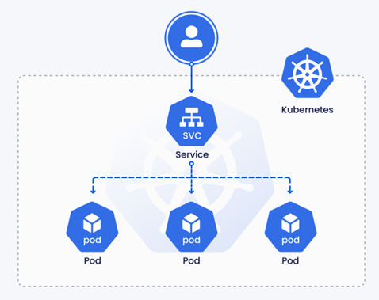
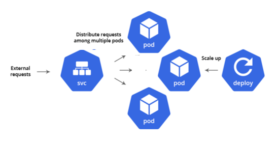
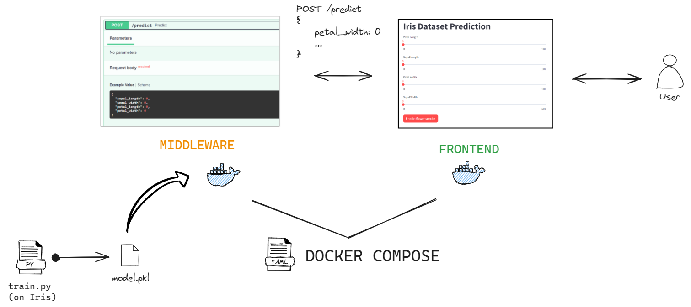
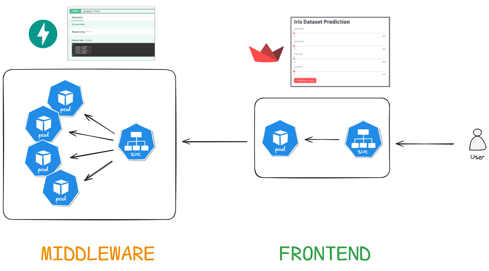

Advanced Deployment with Kubernetes
In this tutorial, we will cover as much Kubernetes practices as we can.
You can play with a sandboxed Kubernetes (often abbreviated k8s):
- Online with Play with Kubernetes following this classroom
- Installing Minikube in your Docker environment
- Using the preconfigured Kubernetes on Docker Desktop.
The last option being already available to you, we will go with that.
Prerequisites
- Docker Desktop
1. Kubernetes Quick Start
a. Start Kubernetes
Docker Desktop comes with a deactivated K8s cluster which you can start on demand.
Exercise - Start Docker Desktop's K8s cluster
- Start up Docker Desktop, go to Settings, check
Enable Kubernetesand apply & restart- When Kubernetes is enabled, its status is displayed in the Docker Desktop Dashboard footer and the Docker menu.
- Like the
dockercommand connects to the Docker cluster,kubectlis the command-line tool to run commands against a K8s cluster.
- Open a new Command Line terminal to run
kubectl version - Display the cluster info with
kubectl cluster-info - Display nodes in your cluster with
kubectl get nodes
While Docker handles the creation and running of individual containers on a single host, Kubernetes extends this by orchestrating multiple containers across multiple hosts.
It also includes scaling, load balancing, and self-healing of containerized applications.
In the next section, we will deploy multiple Docker images on this K8s cluster.
b. Build Docker images of a FastAPI API
Let's build 3 versions of a Docker image to see how we can deploy and manage their lifecycle on a K8s cluster.
Exercise - Build 1 Docker image in 3 different versions
- Create a new
app.pywith the following content:
from fastapi import FastAPI
app = FastAPI()
@app.get("/")
async def root():
return {"message": "Hello World"}
@app.get("/version")
async def version():
return {"version": "0.1.0"}
- Build a Docker image to expose this Python API. Tag it
api:0.1.0- If you run
docker run --rm -p 8000:8000 api:0.1.0, you should be able to ping the api onhttp://localhost:8000.
- If you run
- Edit the code to add a new endpoint and edit the version endpoint.
- Build this edited script into a new Docker image
api:0.2.0 - Repeat the process into a new Docker image
api:0.3.0
c. Deploy a Pod
The Pod is the smallest deployable unit in Kubernetes. Think of it as a small wrapper around one to multiple running container so it runs on Kubernetes as the basic building block.
The most common way to deploy on Kubernetes is by declaring what you want deployed in a YAML manifest file. The YAML specification describes how we want our app to run on Kubernetes, and Kubernetes will do its best to move the current state of the app to match the spec.

Exercise - Deploy the Dockerized API into a pod
- In a new folder
k8s, - Create a new
pod.yamlfile. - Edit its contents to declare you want one running pod from the Docker image
api:0.1.0in thespec, andmetadatawith a name and set of labels to help identify the pod:
apiVersion: v1
kind: Pod
metadata:
name: api-pod
labels:
app: api
version: 0.1.0
spec:
containers:
- name: api
image: api:0.1.0
ports:
- containerPort: 8000
- Send the YAML manifest file to Kubernetes, with the command
kubectl apply -f pod.yaml. - Check all running pods on Kubernetes with
kubectl get pods. - Get pod details:
kubectl get pod api-pod -o yaml- Find the
specfield, which is the desired state from the YAML file, - and the
statusfield, which is the current state of the pod
- Find the
- Describe the pod with
kubectl describe pod api-pod. - Open a shell inside the pod:
kubectl exec -it api-pod -- /bin/bash- From inside the pod: update all packages
apt update - Install curl:
apt install curl - Ping the api with
curl http://localhost:8000andcurl http://localhost:8000/version.
- From inside the pod: update all packages
- Select pods with a specific label, example
kubectl get pods -l app=api - Find and run the command to print the logs from the pod
- Find and run the command to port-forward port 8000 of the pod and connect to it from the browser on http://localhost:8000/.
- Destroy the pod with:
kubectl delete pod api-pod- Does the pod self-heal/reappear?
- Recreate the pod with the command
kubectl apply -f pod.yaml. - Officially delete all pods by declaring the deletion of the yaml file:
kubectl delete -f pod.yaml.
Here's a breakdown of the YAML file
# The version of the Kubernetes API you're using
apiVersion: v1
# What type of resource you're creating (Pod, Deployment, Service, etc.)
kind: Pod
# Metadata about the resource (name, labels, etc.)
metadata:
name: api-pod # The name of your pod
labels: # Labels are key-value pairs used for organizing and selecting resources
app: api # Example label: app=api
# The actual specification of what you want to create
spec:
containers: # List of containers in the pod
- name: api # Name of the container
image: api:0.1.0 # Docker image to use
ports: # Ports to expose
- containerPort: 8080 # Port the container listens on
Now that you have run your Docker image in a Pod on Kubernetes, let's start more pods.

Exercise - Deploy more pooodddsss
- Edit
pod.yamlto start 3 pods, 1 per version
apiVersion: v1
kind: Pod
metadata:
name: api-pod-1
labels:
app: api
version: 0.1.0
spec:
containers:
- name: api
image: api:0.1.0
ports:
- containerPort: 8000
---
apiVersion: v1
kind: Pod
metadata:
name: api-pod-2
labels:
app: api
version: 0.2.0
spec:
containers:
- name: api
image: api:0.2.0
ports:
- containerPort: 8000
---
apiVersion: v1
kind: Pod
metadata:
name: api-pod-3
labels:
app: api
version: 0.3.0
spec:
containers:
- name: api
image: api:0.3.0
ports:
- containerPort: 8000
- Re-apply the declarative spec:
kubectl apply -f pod.yaml - List all pods:
kubectl get pods - Delete the second one:
kubectl delete pod api-pod-2. Does it self-heal? - Rerun
kubectl apply -f pod.yaml. What do you think happened to each pod? - Delete all pods by declaring the deletion of the yaml file:
kubectl delete -f pod.yaml.
Challenge - Namespaces
All the Pods are mixed in the same default namespace. Namespaces allow us to logically divide our pods into different sub-groups of the cluster.

After reading on K8s namespaces:
- Create 3 namespaces
dev,qualifandprodnamespaces, using anamespace.yamlYAML manifest file - Deploy:
api:0.1.0inprodwith a labelenvironment=prod,api:0.2.0inqualifwith a labelenvironment=qualifapi:0.3.0indevwith a labelenvironment=dev.- All pods should have the same name
api-podbut located in different namespaces.
- Switch between different namespaces to check the existence of your pod.
- Select all
devpods by filtering all pods over theenvironment=devlabel. - When you are done,
kubectl delete -f pod.yamlandkubectl delete -f namespace.yamlto clean up everything.
The most fundamental concept in Kubernetes is its declarative approach, where you specify your desired state in YAML files, describing what you want to run, how you want it configured, and how it should behave.
Kubernetes continuously works to ensure that current state matches this specification.
d. Scale Pods in a Deployment
As seen in the previous section, pods don't self-heal nor scale up and down. It is also not easy to update or rollback an app version of a Pod.
A Deployment is a higher-level Kubernetes resource that manages Pods for you, automatically handling replication, scaling, and updates while maintaining your desired state.

When a Pod fails or is deleted in a Deployment, Kubernetes automatically creates a new one to converge back to the Deployment desired state. The Deployment also ensures a smooth rolling update by gradually replacing old Pods with new ones, with the ability to rollback if something goes wrong.
Let's see how to convert our previous Pod specification into a Deployment.
Exercise - Deploy 10 replicas of a Pod
- Create a new
deployment.yamlfile
apiVersion: apps/v1
kind: Deployment
metadata:
name: api-deploy
spec:
replicas: 10
selector:
matchLabels:
app: api
minReadySeconds: 10
strategy:
type: RollingUpdate
rollingUpdate:
maxUnavailable: 1
maxSurge: 1
template:
metadata:
labels:
app: api
spec:
containers:
- name: api-pod
image: api:0.1.0
ports:
- containerPort: 8000
- Declare it to Kubernetes with
kubectl apply -f deployment.yaml - Verify you have 10 pods running in
kubectl get pods - Inspect the deployment with
kubectl get deploy api-deployandkubectl describe deploy api-deploy - Let's see pods self-healing
- In another Command line, run
kubectl get deploy api-deploy --watchto watch deployment state in real time - Destroy one of the pods:
kubectl delete pod api-deploy-<id> - Analyze the watch. Did it self-heal? Confirm by listing all pods.
- In another Command line, run
- In the YAML file, change the number of replicas, then reapply the file
kubectl apply -f deployment.yaml. Watch as the number of replicas grow or shrink depending on the number you entered.
Here's a breakdown of the YAML file
# Specifies which version of the Kubernetes API to use
# apps/v1 is used for Deployments, while v1 was used for Pods
apiVersion: apps/v1
# Indicates we're creating a Deployment (not a Pod, Service, etc.)
kind: Deployment
# Basic information about our Deployment
metadata:
name: api-deploy # Name of the Deployment
# The main configuration section
spec:
# Number of Pod replicas to maintain
replicas: 10 # Kubernetes will ensure 10 Pods are always running
# Tells Deployment which Pods to manage
selector:
matchLabels:
app: api # Will manage any Pod with label app: api
# Minimum time before a Pod is considered "ready"
minReadySeconds: 10 # Waits 10 seconds before considering Pod ready
# Defines how updates should be performed
strategy:
type: RollingUpdate # Update Pods one by one
rollingUpdate:
maxUnavailable: 1 # Max number of Pods that can be unavailable during update
maxSurge: 1 # Max number of extra Pods during update
# Template for creating new Pods (similar to Pod YAML we saw earlier)
template:
metadata:
labels:
app: api # Each Pod gets this label (matches selector above)
spec:
containers: # Container specifications (just like in Pod YAML)
- name: api-pod
image: api:0.1.0
ports:
- containerPort: 8000
e. Expose Pods in Deployment with a Service
In order to access the application from a stable name or IP address, we need a Kubernetes Service over a set of pods.

Exercise - Expose pods with a service
- Make sure your previous deployment of 10 pods with label
app=apiis still running:kubectl get pods -l app=api - Create a new
service.yamlfile with the following content:
apiVersion: v1
kind: Service
metadata:
name: api-svc
labels:
app: api
spec:
type: NodePort
ports:
- port: 8000
nodePort: 30001
protocol: TCP
selector:
app: api
- Open your browser on http://localhost:30001/docs. You will be redirected to one of the Pods at random.
Here's a breakdown of the YAML file
# Specifies the API version for Services
apiVersion: v1
# Defines this as a Service resource type
kind: Service
# Metadata section for naming and labeling the service
metadata:
# The name of the service, will be used for DNS within cluster
name: api-svc
# Labels attached to this service (for organization/selection)
labels:
app: api
# Main service specification
spec:
# Type of service (NodePort, ClusterIP, LoadBalancer, ExternalName)
type: NodePort
# Port configuration
ports:
# Can have multiple port mappings, this is an array
- port: 8000 # The port exposed internally in the cluster
nodePort: 30000 # The port exposed on each node (must be 30000-32767)
protocol: TCP # Protocol for this port (TCP, UDP, or SCTP)
# Defines which pods this service will send traffic to
# Matches pods with label app: api
selector:
app: api # Must match the labels in pod/deployment template
The Deployment -> Pod Replicas -> Service is the minimum viable knowledge you need to survive Kubernetes 

2. From Docker Compose to Kubernetes
Remember the Iris project architecture from the Docker Compose tutorial?

It is time to replace Docker Compose by Kubernetes.

Challenge - Build a Fullstack web service on Kubernetes
- Rebuild the
mlops-client:latestDocker image - Build 3 different ML models for Iris prediction into 3 different Docker images
mlops-server:0.1.0,mlops-server:0.2.0andmlops-server:0.3.0.- Specify the version of the API in the
/versionendpoint
- Specify the version of the API in the
- Declare a frontend service over a
mlops-client:latestdeployment - Declare a backend service over a
mlops-server:0.1.0deployment with 3 replicas - Connect the frontend service to the backend service of Iris Predictor, by hitting the name of the service from the Python code.
- If your service is called
mlops-api-service, thenhttp://mlops-api-service:8000should redirect to a pod behind the service.
- If your service is called
Keep your Iris deployment up. In the following section, you will upgrade and rollback the mlops-server Docker image to different versions, with 0 downtime over the API.
3. Deployment strategies
a. Rolling Update
Rolling updates allow you to update your application with zero downtime by gradually replacing old pods with new ones.
Exercise - Rolling Update of Iris Predictor
-
Check your current deployment status:
-
Update the image in deployment.yaml to version 0.2.0:
-
Apply the update:
-
Watch the rolling update:
-
If something goes wrong, rollback:
Important: ImagePullPolicy
Always set imagePullPolicy: Always in your deployment specification when working with versioned images. This ensures that Kubernetes always pulls the latest version of your image with the specified tag, even if an image with the same tag exists locally. This is particularly important when:
- You're rebuilding images with the same tag
- You're using rolling updates
- You want to ensure consistency across all nodes in your cluster
Without this policy, Kubernetes might use cached versions of your images, which could lead to inconsistent deployments.
Here's a complete deployment example with proper ImagePullPolicy. Just for fun I also specify some more best practices.
apiVersion: apps/v1
kind: Deployment
metadata:
name: mlops-server
labels:
app: mlops-server
spec:
replicas: 3
selector:
matchLabels:
app: mlops-server
strategy:
type: RollingUpdate
rollingUpdate:
maxUnavailable: 1
maxSurge: 1
template:
metadata:
labels:
app: mlops-server
spec:
containers:
- name: mlops-server
image: mlops-server:0.2.0
imagePullPolicy: Always
ports:
- containerPort: 8000
resources:
requests:
memory: "64Mi"
cpu: "250m"
limits:
memory: "128Mi"
cpu: "500m"
readinessProbe:
httpGet:
path: /
port: 8000
initialDelaySeconds: 5
periodSeconds: 5
livenessProbe:
httpGet:
path: /
port: 8000
initialDelaySeconds: 15
periodSeconds: 20
b. Blue/Green Deployment
Blue/Green deployment involves running two identical environments: the current version (blue) and the new version (green). Traffic is switched from blue to green all at once.
Exercise - Blue/Green Deployment of Iris Predictor
-
Create two deployments (blue and green):
# blue-deployment.yaml apiVersion: apps/v1 kind: Deployment metadata: name: mlops-server-blue spec: replicas: 3 selector: matchLabels: app: mlops-server version: blue template: metadata: labels: app: mlops-server version: blue spec: containers: - name: mlops-server image: mlops-server:0.1.0 --- # green-deployment.yaml apiVersion: apps/v1 kind: Deployment metadata: name: mlops-server-green spec: replicas: 3 selector: matchLabels: app: mlops-server version: green template: metadata: labels: app: mlops-server version: green spec: containers: - name: mlops-server image: mlops-server:0.2.0 -
Create a service pointing to blue:
-
To switch to green, update service selector to version: green
c. Canary Deployment
Canary deployment involves gradually routing a small percentage of traffic to the new version while maintaining the majority of traffic to the stable version.
Exercise - Canary Deployment of Iris Predictor
-
Deploy both versions with different replica counts:
# stable deployment (90% of traffic) apiVersion: apps/v1 kind: Deployment metadata: name: mlops-server-stable spec: replicas: 9 template: metadata: labels: app: mlops-server version: stable spec: containers: - name: mlops-server image: mlops-server:0.1.0 --- # canary deployment (10% of traffic) apiVersion: apps/v1 kind: Deployment metadata: name: mlops-server-canary spec: replicas: 1 template: metadata: labels: app: mlops-server version: canary spec: containers: - name: mlops-server image: mlops-server:0.2.0 -
Create a service that selects both deployments:
-
To increase canary traffic, gradually increase its replicas while decreasing stable replicas
- If canary is successful, gradually migrate all traffic to new version
- If issues occur, scale down canary deployment to 0
4. Advanced Practices (GEMINI generated)
a. Configuration & Secrets
Decoupling configuration from code is a core tenet of cloud-native development.
- ConfigMap: Stores non-confidential data in key-value pairs.
- Secret: Stores confidential data (passwords, OAuth tokens, ssh keys).
Exercise - Externalize Configuration
- Create a ConfigMap with your API version/name:
- Create a Secret with a dummy API key (base64 encoded):
- Update your
mlops-serverdeployment to inject these as environment variables: - Verify they are injected by exec-ing into a pod and running
env.
b. Persistent Storage
Pods are ephemeral; when they die, their filesystem is lost. For databases, we need data to survive pod restarts.
Exercise - Add Persistence to a Database
- Define a PersistentVolumeClaim (PVC) to request storage:
- Deploy a Postgres database using this PVC:
apiVersion: apps/v1 kind: Deployment metadata: name: postgres-db spec: replicas: 1 selector: matchLabels: app: db template: metadata: labels: app: db spec: containers: - name: postgres image: postgres:15 env: - name: POSTGRES_PASSWORD value: "mysecretpassword" # In prod, use a Secret! volumeMounts: - mountPath: /var/lib/postgresql/data name: pg-data volumes: - name: pg-data persistentVolumeClaim: claimName: db-pvc - Delete the Postgres pod and wait for a new one to start. The data inside
/var/lib/postgresql/datashould persist.
c. CronJobs
Sometimes you need to run batch jobs (e.g., data processing, model retraining) on a schedule.
Exercise - Scheduled Tasks
- Create a CronJob that runs every minute to retrain the model (simulated by a call to the API):
apiVersion: batch/v1 kind: CronJob metadata: name: model-retrainer spec: schedule: "*/1 * * * *" # Run every minute jobTemplate: spec: template: spec: containers: - name: retrainer image: curlimages/curl args: - /bin/sh - -c - "curl -X POST http://mlops-server-svc:8000/predict -H 'Content-Type: application/json' -d '{\"sepal_length\": 5.1, \"sepal_width\": 3.5, \"petal_length\": 1.4, \"petal_width\": 0.2}'" restartPolicy: OnFailure - Watch the jobs being created:
kubectl get jobs --watch - Check the logs of a completed job to see the output.
5. Deploying Modern AI Workloads (GEMINI generated)
In GenAI Tutorial Section 6, we built a modern AI stack with FastMCP (Tool Server) and PydanticAI (Agent). Let's deploy this to Kubernetes.
a. Deploying the MCP Server
We need a Deployment for the server and a Service to expose it to the Agent.
Exercise - MCP Server Deployment
- Build your
mcp-serverimage and tag itmcp-math:latest. - Create
mcp-deployment.yaml:
apiVersion: apps/v1
kind: Deployment
metadata:
name: mcp-math
spec:
replicas: 1
selector:
matchLabels:
app: mcp-math
template:
metadata:
labels:
app: mcp-math
spec:
containers:
- name: mcp-math
image: mcp-math:latest
imagePullPolicy: IfNotPresent
ports:
- containerPort: 8000
---
apiVersion: v1
kind: Service
metadata:
name: mcp-math-svc
spec:
selector:
app: mcp-math
ports:
- port: 8000
targetPort: 8000
kubectl apply -f mcp-deployment.yaml
b. Deploying the Agent
The Agent needs to know where the MCP server is. In Kubernetes, we use the Service name (DNS) for discovery.
Exercise - Agent Deployment
- Build your
agentimage and tag itagent:latest. - Create
agent-deployment.yaml. Notice how we pass the URL using the Service namemcp-math-svc.
Challenge - Scaling Agents
- Scale your Agent deployment to 5 replicas.
- Does your FastMCP server handle the concurrent connections?
- If not, scale the MCP server and ensure the Service balances the load.